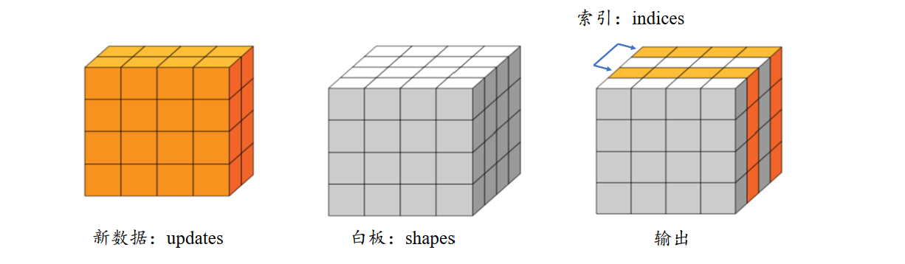

tf.gather
可以实现根据索引号收集数据
假设有4个班级，每班35人，共8门课程的成绩
举几个栗子

它等价于
但是对于不规则（连续）的索引，还是tf.gather()更强大
通过组合多个tf.gather，可以实现复杂一点的功能

现在，想要抽查第 2 个班级的第 2 个同学的所有科目， 第 3 个班级的第 3 个同学的所有科目，第 4 个班级的第 4 个同学的所有科目
这个更复杂了

可以这样

然后用stack()合并

但是还有更好的方法，那就是tf.gather_nd
tf.gather_nd
也是根据索引号收集数据，只不过比tf.gather更灵活些
继续上面的例子

变得简洁了，只需传入一个列表
再举个复杂点的栗子：选取1班的学生1的科目2、2班的学生2的科目3、班级3的学生3的科目4的成绩，共有3个成绩数据

tf.boollean_mask
以掩码方式选取数据


这里的 tf.boolean_mask 的用法其实与 tf.gather 非常类似，只不过一个通过掩码方式采样，一个直接给出索引号采样
其实它也可以像tf.gather_nd那样，做多维掩码采样
两个班级，每班3个学生，8门课的成绩
现在希望采样第 1 个班级的第 1到2 号学生，第 2 个班级的第 2到3 号学生，通过tf.gather_nd可以这样做

采用掩码方式，可以这样
tf.boolean_mask 既可以实现了tf.gather方式的一维掩码采样， 又可以实现 tf.gather_nd 方式的多维掩码采样
tf.where

 返回的张量中为 1 的位置全部来自张量 a，返回的张量中为 0 的位置来自张量
返回的张量中为 1 的位置全部来自张量 a，返回的张量中为 0 的位置来自张量
b
若a与b为None，则返回condition张量中所有为True元素的索引坐标：

这个功能有很好的应用场景：
提取张量中所有正数的数据和索引

当然， 得到掩码 mask 之后， 也可以直接通过 tf.boolean_mask 获取所有正数的元
素向量

scatter_nd
通过 tf.scatter_nd(indices, updates, shape)函数可以高效地刷新张量的部分数据，但是这个函数只能在全 0 的白板张量上面执行刷新操作，因此可能需要结合其它操作来实现现有张量的数据刷新功能
向量的刷新

三维张量的刷新


meshgrid
可以方便的生成二维网格的采样点坐标


- 本文链接：http://yoursite.com/2020/07/10/Tensorflow%E4%B8%AD%E7%9A%84%E9%AB%98%E7%BA%A7%E6%93%8D%E4%BD%9C/
- 版权声明：本博客所有文章除特别声明外，均默认采用 许可协议。